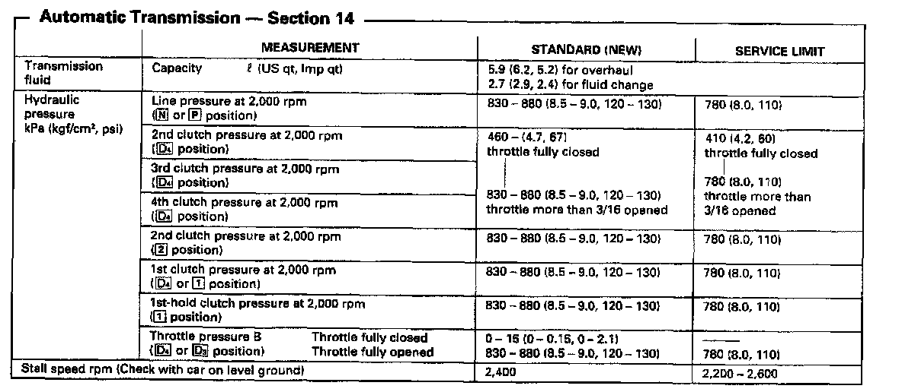
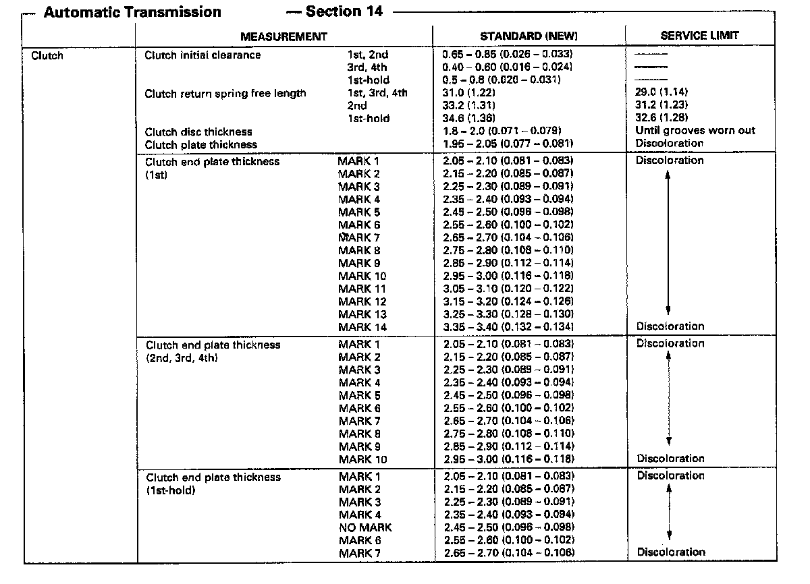
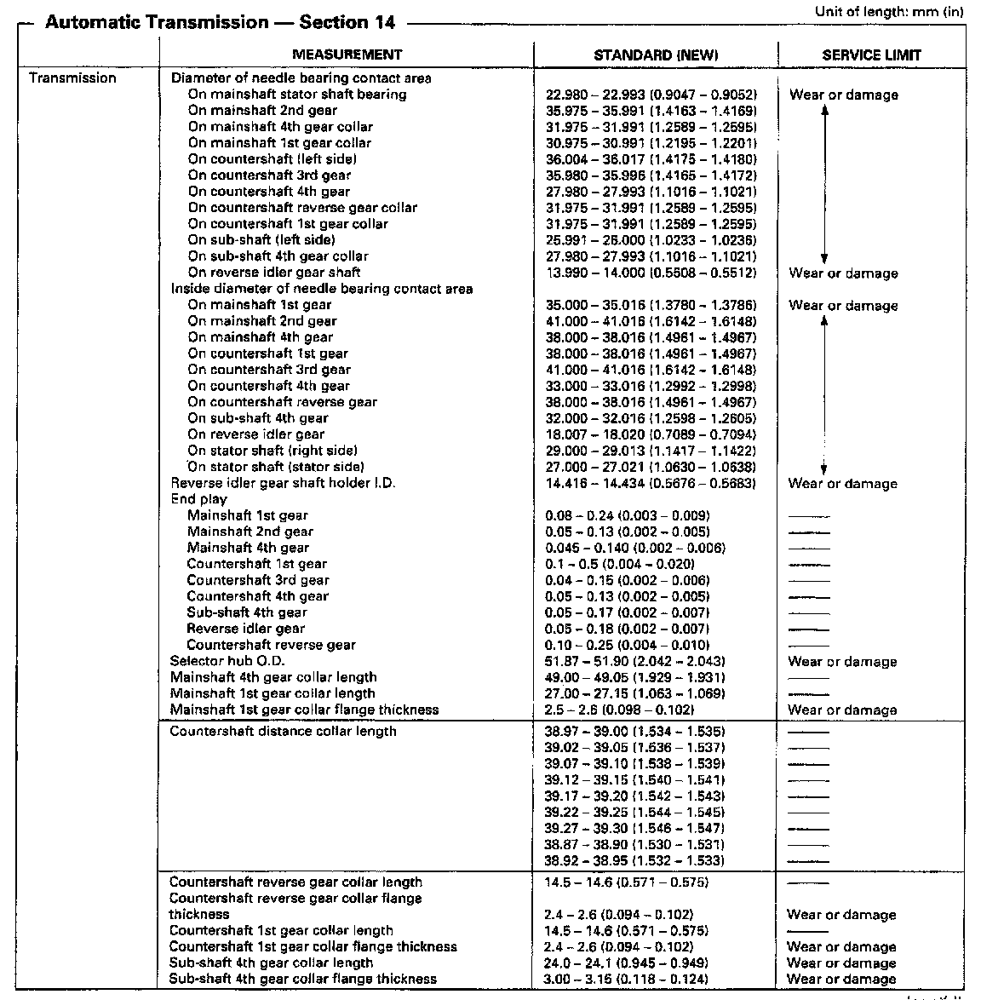
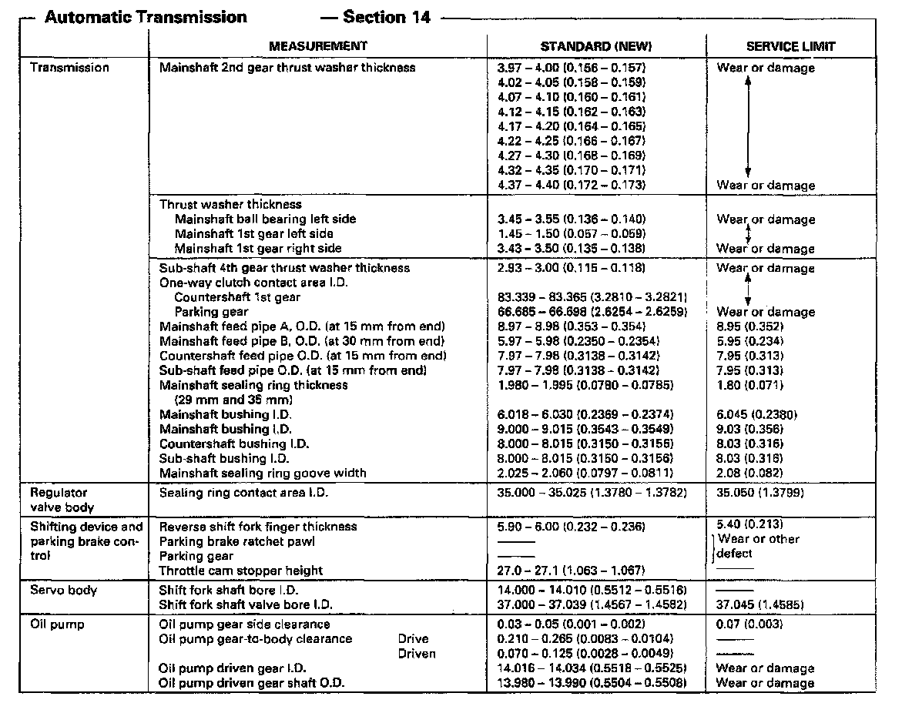
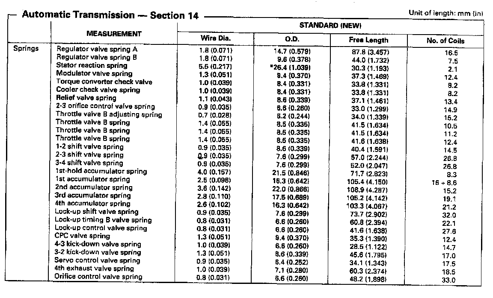
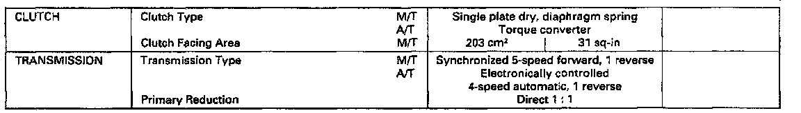
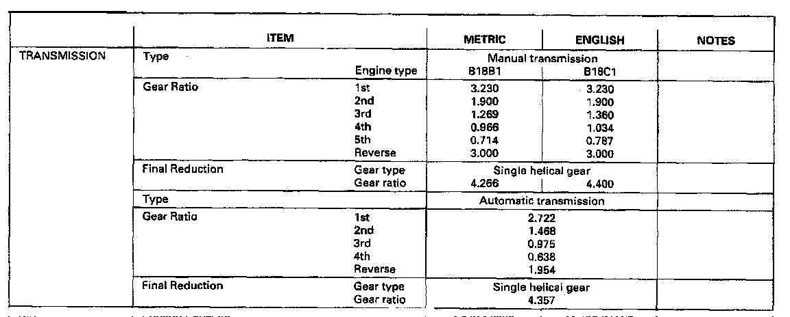

Mechanical Specifications
SP7A 4-spd A/T, Line Pressure, Stall Speed:

SP7A 4-spd A/T, Clutch Thickness:

SP7A 4-spd A/T, Transmission Measurements:

SP7A 4-spd A/T, Mainshaft/Countershaft, Oil Pump Clearances:

SP7A 4-spd A/T, Transmission Spring Measurements:

Manual/Automatic Transmission Clutch Ratio:

Manual/Automatic Transmission Gear Ratios:
